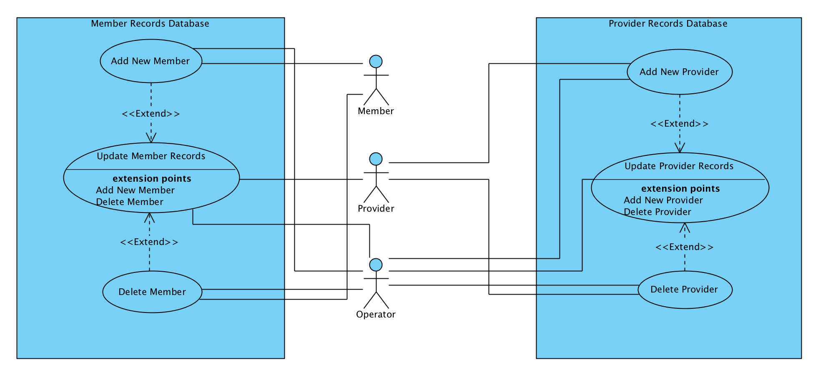

NAME: Parker Jones
CWID: 11616467
EMAIL: pajones3@crimson.ua.edu
Task Distribution:
The Use Cases and their corresponding diagrams and scenarios were split amongst four members.
The fifth member was responsible for creating the main HTML report and assisting in Use Case design.
I (Parker) was responsible for building the HTML file used in our report, and for gathering all Use Case
diagrams and designs.
I also helped other team members solve problems or complications with their Use Case scenarios.
As the team's submitter, I was also responsible for submitting our completed project and full solution.
The task distribution for each group member was even and is outlined below:
Hunter James - 20%
Parker Jones - 20%
Cole Schram - 20%
Aislinn Marsden - 20%
Riley Manning - 20%
Glossary
Acceptance Test: the set of tasks the software must be capable of in order to be complete and accepted by
Chocoholics Anonymous, which includes the following: data from provider’s terminal must be simulated by keyboard
input, and data to be transmitted to a provider’s terminal must appear on the screen; each member report must be
written to its own file, and the name of the file should begin with the member name, followed by the date of the
report (the provider reports should be handled in the same way); the Provider Directory must also be created as
a
file, and none of the files should actually be sent as email attachments; for EFT data, a file is to be set up
containing provider name, provider number and the amount to be transferred.
Acme Accounting Services: the third-party responsible for all financial procedures, including
recording
payments of membership fees, suspending members with overdue fees, and reinstating suspended members; as well as
updating relevant ChocAn Data Center computer membership records each evening at 9pm
Bill of Service: bill from the providers to ChocAn for the services rendered to the member
Chocoholics Anonymous: organization dedicated to help people addicted to chocolate; our client
ChocAn: shorthand for Chocoholics Anonymous
ChocAn Manager: an employee/user who is able to generate member reports
ChocAn Data Center: the database that contains all ChocAn member and provider information and
records of
service
EFT: Electronic Funds Transfer data sent to banks for all monetary transactions
Fees: monthly bill from ChocAn to the member that pays for that member’s membership in ChocAn
Interactive Mode: the way the ChocAn Data Center is run, during which: operators can add new
members, delete
resigned members and update member records; and provider records are added, deleted, and updated.
Members: clients of ChocAn; chocoholics in need of ChocAn’s services
Member Number: 9 digit number given to each member as a means of identification
Member Report: The report which is generated and given to a ChocAn member listing services received
with the
week of the report being generated
Membership card: membership card that each member is given: includes a Member Number and the
member's name;
magnetic strip on the card has the above information encoded on it; scanned at the provider’s Terminal
Operators: employees of Chocoholics Anonymous who work in the ChocAn Data Center and are
responsible for
servicing the data center and all tasks completed while in Interactive Mode.
Provider: health care professional that is affiliated with ChocAn; will provide unlimited services
for ChocAn
Members; each has a unique provider ID
Provider Directory: alphabetically ordered list of service names and corresponding service codes
and fees
Record: set of information written to a disk by software for each service.
Report: an e-mail attachment that contains the list of services a provider provided to a member of
ChocAn.
Service Code: a 6 digit code that corresponds to the service rendered; this is entered into the
Terminal after
the date is entered in the billing process.
Terminal: device at each of the providers’ place of business, when turned on the provider’s id must
be entered;
scans membership card and passes the information to the software that will verify if the information is valid
(If
card is valid, the screen says “valid,” if card is invalid, the screen says “invalid” and lists a reason)
back to top.
Use Cases
Interactive Mode:

Use Case: Update Member Records
Context: Throughout the day, Operators must update member records to match any changes in membership
Actors: Operator, Member, Provider, Member Records Database
Main Success Scenario:
1. The Operator receives notification that someone’s membership has changed.
2. The Operator locates the Member’s individual record using their Member number.
3. The Operator opens the Member’s file and makes the necessary changes.
3.1. For simple changes (like address or phone number), the Operator simply edits the Member’s file and updates the information.
3.2. For Provider visit updates, the Operator locates the form filled out by the Provider after the visit and adds the visit to the Member’s record.
3.3. For billing updates, see Main Accounting Procedure.
4. The Operator saves all changes and closes the Member’s record.
Extensions:
1.1a. A new Member has joined and must be added to the system.
1.2a. A member has resigned and must be removed from the system.
-------------------------------------------------------------------------------------
Use Case: Add New Member extends Update Member Records
Context: A new person registered for a ChocAn membership and must be added to the system.
Actors: Operator, Member, Member Records Database (part of ChocAn Data Center software)
Main Success Scenario:
1.1.1. The new Member fills out the registration form (either online or in person)
1.1.1.1. If in-person, the Data Center Operator manually retrieves this information
1.1.1.2. If online, the form data is sent to the Operator.
1.1.1.3. Form includes Member name, mailing address and phone number
1.1.2. The Operator assigns the next available Member number to the new Member
1.1.2.1. The Operator opens the document containing all Member numbers
1.1.2.2. The Operator finds the most recently assigned number and adds 1.
1.1.2.3. The new Member’s name is assigned to this number
1.1.3. The Operator updates the ChocAn Data Center’s member records
1.1.3.1. The Operator opens the member database and creates a new record
1.1.3.2. The Member’s name, mailing address, phone number, and Member number are added to this unique member record
1.1.4. The Member is sent a personalized card with their name and Member number
1.1.4.1. If the Member filled out the registration form in person, an Operator prints out the card and gives it to the Member
1.1.4.2. If the Member filled out the registration form online, an Operator prints out the card and mails it to the Member at their listed mailing address
1.1.5. The Member is now ready to receive ChocAn services.
Extensions:
1.1.1.3a. The Member name on the registration form matches an existing record
1.1.1.3a.1. If the new Member is actually an existing member, the Operator does not make a new record for this Member.
1.1.1.3a.2. If the new Member has the same name as an existing member, the process does not change. They will be distinguished from any similar names by their Member number.
-------------------------------------------------------------------------------------
Use Case: Delete Member extends Update Member Records
Context: A Member is no longer a part of ChocAn, and their record must be deleted.
Actors: Operator, Member, Member Records Database (part of ChocAn Data Center software)
Main Success Scenario:
1.2.1. ChocAn is notified that a Member is to be removed from ChocAn.
1.2.1.1. If the Member is choosing to be removed, they request this either in person, on the phone or in an email to a ChocAn Provider or Operator.
1.2.1.2. If the Member must be removed for financial reasons, an Operator is notified by the ChocAn Data Center Manager.
1.2.2. The Operator opens the Member records database in the ChocAn Data Center software.
1.2.3. The Operator locates the Member’s individual record using their Member number.
1.2.4. The Member’s record is deleted by the Operator.
1.2.4.1. The file containing the Member’s contact information and billing history is archived for a period of 60 days to handle any outstanding payments.
1.2.4.2. After 60 days, all files pertaining to that Member are deleted permanently.
Extensions:
1.2.5a. The deleted Member wishes to be reinstated.
1.2.5a.1. If done within 60 days of cancellation, the Member’s record is removed from the archives and returned to the database. The Member may keep their previous Member number and Member ID card.
1.2.5a.2. If done after 60 days, the Member is treated like a new Member and must receive a new number and ID card.
-------------------------------------------------------------------------------------
Use Case: Update Provider Records
Context: Throughout the day, Operators must update Provider records to match any changes in Provider information
Actors: Operator, Provider, Provider Records Database
Main Success Scenario:
1. The Operator receives notification that a Provider’s status has changed.
2. The Operator locates the Provider’s individual record using their Provider number.
3. The Operator opens the Provider’s file and makes the necessary changes.
3.1. For simple changes (like address or phone number), the Operator simply edits the Provider’s file and updates the information.
3.2. For changes in services offered, see Add New Provider Service.
3.3. For billing updates, see Main Accounting Procedure.
4. The Operator saves all changes and closes the Provider’s record.
Extensions:
1.1a. A new Provider has joined and must be added to the system.
1.2a. A Provider has resigned and must be removed from the system.
-------------------------------------------------------------------------------------
Use Case: Add Provider extends Update Provider Records
Context: A new person registered as a ChocAn Provider and must be added to the system.
Actors: Operator, Provider, Provider Records Database (part of ChocAn Data Center software)
Main Success Scenario:
1.1.1 The new Provider registers via the Provider application (either online or in person)
1.1.1.1 If in-person, the Data Center Operator manually reviews this application.
1.1.1.2. If online, the application is sent to the Operator for review.
1.1.1.3. Form includes Provider name, mailing address, phone number, services offered and qualifications.
1.1.1.4. If Provider is approved by ChocAn, continue:
1.1.2. The Operator assigns the next available Provider number to the new Provider.
1.1.2.1. The Operator opens the document containing all Provider numbers.
1.1.2.2. The Operator finds the most recently assigned number and adds 1.
1.1.2.3. The new Provider’s name is assigned to this number.
1.1.3. The Operator updates the ChocAn Data Center’s provider records.
1.1.3.1. The Operator opens the provider database and creates a new record.
1.1.3.2. The Provider’s name, mailing address, phone number, application information and Provider number are added to this unique provider record.
1.1.4. The Provider is granted access to their personal Provider Terminal and given instructions for use.
1.1.5. The Provider is now ready to provide ChocAn services.
Extensions:
1.1.1.3a. The Provider name on the registration form matches an existing record
1.1.1.3a.1. If the new Provider is actually an existing provider, the Operator does not make a new record for this Provider.
1.1.1.3a.2. If the new Provider has the same name as an existing provider, the process does not change. They will be distinguished from any similar names by their Provider number.
-------------------------------------------------------------------------------------
Use Case: Delete Provider extends Update Provider Records
Context: A Provider is no longer a part of ChocAn, and their record must be deleted.
Actors: Provider, Operator, Provider Records Database (part of ChocAn Data Center software)
Main Success Scenario:
1.2.1. ChocAn is notified that a Provider is to be removed from ChocAn.
1.2.2. The Operator opens the Provider records database in the ChocAn Data Center software.
1.2.3. The Operator locates the Provider’s individual record using their Provider number.
1.2.4. The Provider’s record is deleted by the Operator.
1.2.4.1. The file containing the Provider’s contact information and services given is archived for a period of 60 days to handle any outstanding transactions.
1.2.4.2. After 60 days, all files pertaining to that Provider are deleted permanently.
Extensions:
1.2.5a. The deleted Provider wishes to be reinstated.
1.2.5a.1. If done within 60 days of cancellation, the Provider’s record is removed from the archives and returned to the database. The Provider may keep their previous Provider number.
1.2.5a.2. If done after 60 days, the Provider is treated like a new Provider and must receive a new number.
-------------------------------------------------------------------------------------
-------------------------------------------------------------------------------------
Billing ChocAn:

Use Case: Validating Provider
Context: Provider needs to turn on and unlock the terminal
Actors: Provider, Software
Main Success Scenario:
1. Terminal is turned on
2. Terminal prompts Provider for provider number
2.1. provider enters provider number
2.2. software validates provider’s credentials
3. the terminal switches to an unlocked screen
Extensions:
4.1. Invalid provider number
-------------------------------------------------------------------------------------
Use Case: Invalid Provider Number extends Validating Provider
Context: The provider did not enter a valid provider number.
Actors: Provider, Software
Main Success Scenario:
1. Screen displays “Invalid Provider Number.”
2. Screen returns to regular lock screen until a valid provider number is entered.
Extensions: No extensions
-------------------------------------------------------------------------------------
Use Case: Receiving Service
Context: A member wants to receive a service from a provider.
Actors: Provider, Member, Software
Main Success Scenario:
1. Provider passes member’s card through card reader
2. Members credentials are validated
3. The provider then provides the service.
Extensions:
2.1.1. Invalid member number
2.1.2. Member credentials are not valid: Member Suspended
-------------------------------------------------------------------------------------
Use Case: Invalid member number extends Receiving Service
Context: The member desiring a service from a provider does not have a valid card.
Actors: Provider, Member, Software
Main Success Scenario:
1. The screen displays “Invalid Number” after the member’s card is swiped
2. If the screen continues to display this after multiple swipes, then the card is not connected to an active account
3. The member cannot receive a service.
Extensions: No extensions
-------------------------------------------------------------------------------------
Use Case: Member Suspended extends Receiving Service
Context: The member desiring a service from a provider owes fees to their account.
Actors: Provider, Member, Software
Main Success Scenario:
1. The screen displays “Member Suspended” after the member’s card is swiped.
2. The member cannot receive services because they have not paid their monthly ChocAn membership bill.
Extensions: No extensions
-------------------------------------------------------------------------------------
Use Case: Billing ChocAn
Context: After a service has been provided to a member, the provider bills ChocAn for compensation.
Actors: Provider, Software
Main Success Scenario:
1. Provider passes member’s card through card reader
2. Member’s credentials are validated
3. Provider is prompted to key in the date of service in mm/dd/yyyy format
4. Provider pulls up the Provider Directory to find the correct service code
4.1. Provider presses the button to pull up the Provider Directory
4.2. Provider searches for the correct service, and gets the service code
4.3. Provider closes the Provider Directory and returns to the form
5. Provider inputs the 6 digit service code
6. Software displays the name of the service referenced by the service code for authentication
7. The provider has the option to enter comments about the service provided
8. Software writes a record to disc including:
8.1. Current date and time (MM–DD–YYYY HH:MM:SS).
8.2. Date service was provided (MM–DD–YYYY).
8.3. Provider number (9 digits).
8.4. Member number (9 digits).
8.5. Service code (6 digits).
8.6. Comments (100 characters) (optional).
9. Software looks up fee to be paid for service from service code document and displays it on terminal
10. The provider fills out a form for verification purposes with: the current date and time, the date the service was provided, member name and number, service code, and fee to be paid.
Extensions:
4.2.1. The service is not found in the Provider Directory: add new service.
-------------------------------------------------------------------------------------
Use Case: Add New Service extends Billing ChocAn
Context: The service a provider has provided is not listed in the Provider Directory.
Actors: Provider, Software
Main Success Scenario:
1. Provider clicks the button next to the Provider Directory button that says “add service”.
2. The provider is prompted to enter in two things: the service name and fee. A 6-digit number is generated.
3. A new row is added to the file, containing the number, name, and fee of the service.
4. The provider enters the new number in and continues with the billing process.
Extensions: No extensions
-------------------------------------------------------------------------------------
-------------------------------------------------------------------------------------